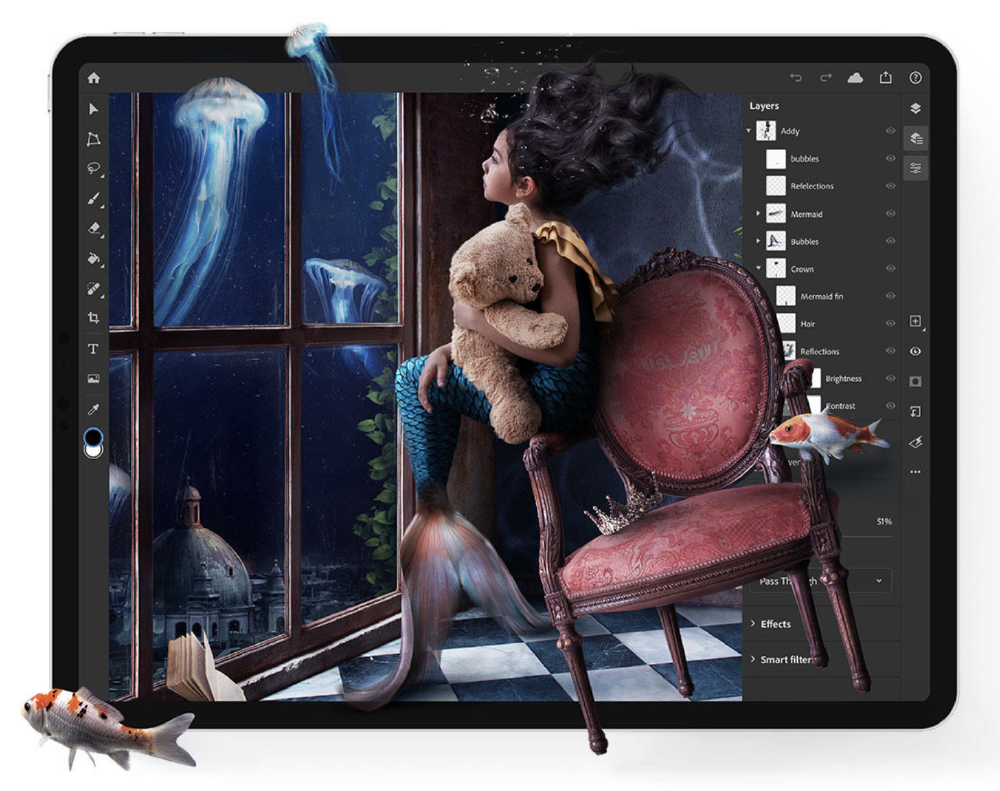

I prototyped and reviewed the functionality of Adobe Photoshop software on the iPad and on the desktop. I communicated with the engineering team about the implementation of user interaction functions and the integration of new applications. In addition, I used the software while traveling abroad (Italy, China, and Vietnam) to test connectivity and function.
I utilized my Cognitive Science – Design minor to accurately test the product and recommend changes based off initial conceptual knowledge and competitor analysis.
